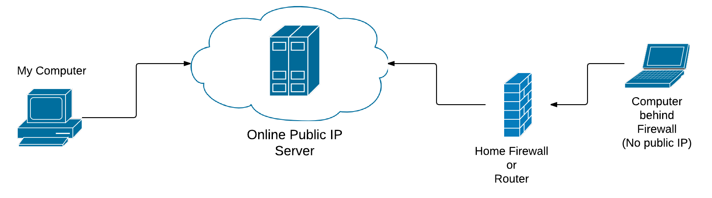
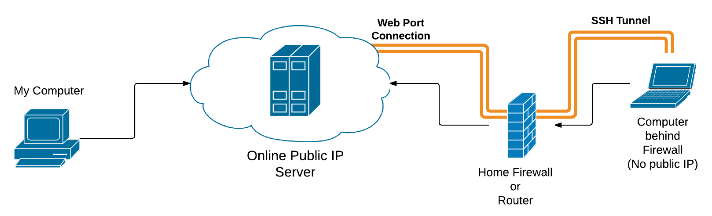
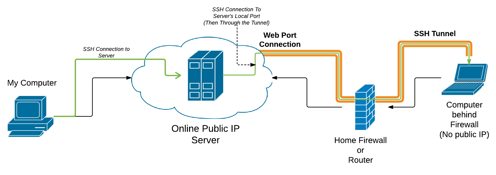

Simple Reverse SSH Tunnels
Last week, I was on vacation with my family. While I didn't work a ton on personal projects, I was at least able to spend some time on my TunelBeacon project again. I will write a dedicated post about that project down the road when I am further along. Basically, it will be a simple GUI to create reverse ssh tunnels, that family and friends can startup in order grant me temporary access to their computer when they need support. Reverse SSH tunnels are very useful and simple to setup, but can be a bit tricky to figure out at first. So, here's a brief and simple guide on how to easily create reverse tunnels.
SSH Tunnels
A secured shell (SSH) tunnel is an encrypted tunnel, created with a connection using the ssh protocol. It can be thought of as a pipe between two computers that data travels through. Being encrypted, people outside the pipe can only see that data packages are traveling through it, but cannot read the actual contents of the package. SSH tunnels are used to securely connect between devices, as well as forward ports between devices. For example, if I am working on a website hosted on port 3000 of my internally networked laptop, I can use a ssh tunnel to forward that port to one on a public server so that friends can view the website.
Reverse Tunnels
Reverse tunnels are just like normal ssh tunnels except... well... in reverse. This means that I can connect to a remote computer, and have its port tunneled to me, which can be very handy. This is largely used for one particular usecase: providing easy, temporarily, ssh access to computers behind a network and/or firewall.
To make all of this (hopefully) easier to understand, I have drafted up a few diagrams. For the example, lets say I am away and my wife wants me to fix something on her laptop. Unless I have her properly configure the router to forward ssh traffic to her laptop, I normally cannot do this. Additionally, she might be at a friends house, office, or other public place where there is no access to the router controls (well, she shouldn't). So, her laptop doesn't have a direct public IP address, but our server does.

Because my wife can connect to the public cloud server, she can initiate a reverse tunnel from her laptop, with the server. The tunnel directly connects the server to her laptop.

On my end, I first ssh to the server from my computer. Once the tunnel is started, I can then ssh again to a specified local port on the server, and it will tunnel me directly to her laptop. This will give me a command prompt as if I was sitting with an open terminal at her computer.

When I am done working, my wife can close the tunnel, and I will no longer be able to access her computer.
Creating The Reverse Tunnel
SSH tunnels can be initiated on linux easily from the command line (assuming ssh is setup and properly configured). To create a reverse tunnel, use the -R flag. After the flag, provide what I call the "path" of the tunnel. So, the server's port where the tunnel will be found, the host of that port (I almost always use localhost), and the port to be tunneled. Lastly, make sure to specify the IP or hostname of the remote computer just like in a typical plain ssh hostname.
ssh -R remote-port:localhost:local-port host
Example:
ssh -R 19999:localhost:22 meowth
Connecting
After setting up the tunnel, the initializing computer can be accessed from the server by ssh'ing to the remote-port of localhost (defined above):
ssh -p 19999 localhost
This should start an ssh session to the initializing computer. In my example, this is the laptop.
Tunnel Beacon
SSH tunnels are a fascinating and useful piece of technology. The ssh protocol makes modern computing much more secure, and easier to manage multiple computers. While ssh tunnels are already widely utilized, I think there are still many applications where it the technology can be applied.
For example, I mentioned in the intro post about my small project, TunelBeacon (Note: this is by no means ready. I've just started playing with it). TunnelBeacon will be a very simple GUI application used to initiate a tunnel from a computer, specifically to receive support. For example, if my wife or any of our parents switch to Linux in the future, we could configure TunnelBeacon on their computer. Then, if they need help they can just open it and hit a button, which will initiate a reverse tunnel to a predefined secure server (or spin up an AWS/DO server... I have ideas). From there, I can remote into their computer no matter what network they are on (as long as ssh isn't blocked). No headache from having them find their public IP, no redirecting router ports, just hitting a button.
So, that's reverse tunnels in a nutshell. With any luck, I should be posting more about them as I progress with TunnelBeacon. Have fun tunneling!